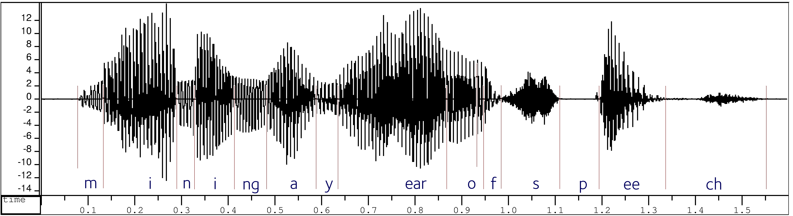
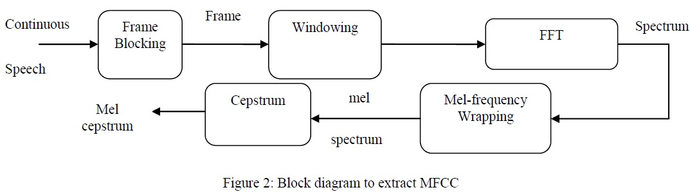
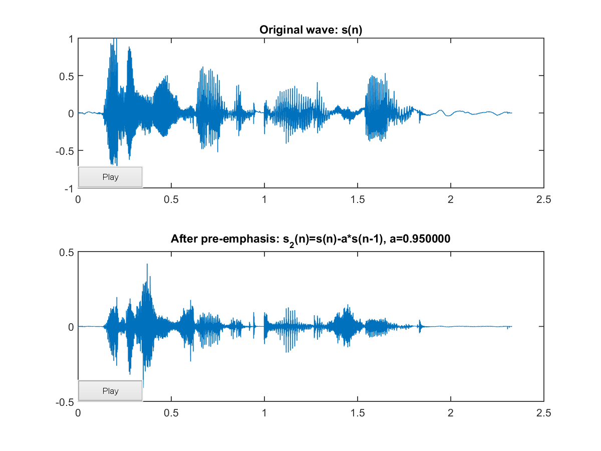
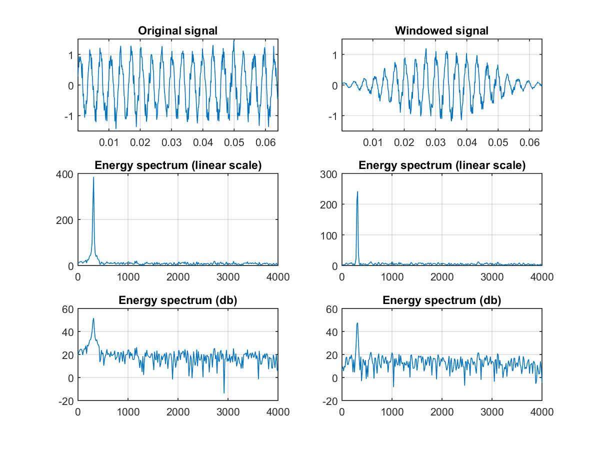
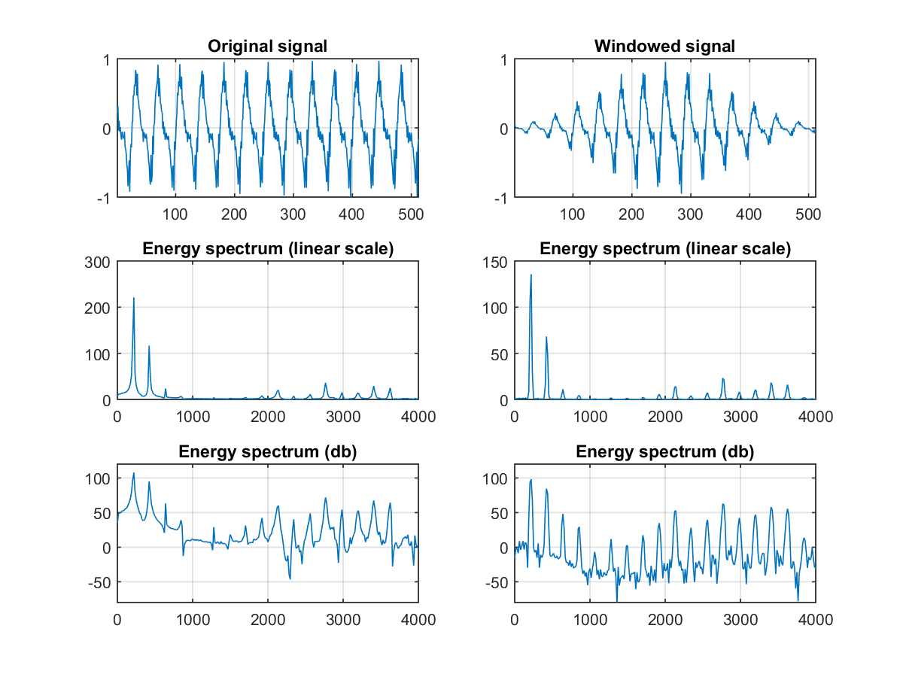

Audio Waveform

Transcription: "mining a year of speech"
MFCC
- Mel-frequency cepstral coefficients
- 在語音辨識和語者辨識方面，最常用到的語音特徵就是「梅爾倒頻譜係數」，此參數考慮到人耳對不同頻率的感受程度，因此特別適合用在語音辨識

Pre-emphasis
將語音訊號 $s(t)$ 通過一個高通濾波器

$$ s'(t) = s(t) - a \cdot s(t-1),\ 0.9 \leq a \leq 1.0$$
Framing & Windowing
Frame blocking
- N samples => frame (N = 256 or 512)
- A frame covers 20~30 ms with overlapping
Hamming window
- Multiply framed signals with a window
Windowed Signal (Noisy)

Windowed Signal (Speech)

Fast Fourier Transform
由於訊號在時域（Time Domain）上的變化通常很難看出訊號的特性，所以通常將它轉換成頻域（Frequency Domain）上的能量分佈來觀察。不同的能量分佈，就能代表不同語音的特性。所以在 windowing 後，每個音框還必需再經過 FFT 以得到在頻譜上的能量分佈
Triangular Bandpass Filters
- 將能量頻譜能量乘以一組 20 個三角帶通濾波器，求得每一個濾波器輸出的對數能量（Log Energy）
- 這 20 個三角帶通濾波器在「梅爾頻率」（Mel Frequency）上是平均分佈的
- 梅爾頻率代表一般人耳對於頻率的感受度
Discrete cosine transform
- 將前述的 20 個對數能量 $E_k$ 帶入離散餘弦轉換，求出 $L$ 階的 Mel-scale Cepstrum 參數（$L$ 通常取 12）
- 轉回類似 Time Domain 的情況來看，又稱 Quefrency Domain，其實也就是 Cepstrum
Log energy
一個音框的音量（即能量），也是語音的重要特徵。我們通常再加上一個音框的對數能量，使得每一個音框基本的語音特徵就有 13 維
Delta cepstrum
- 截至目前為止，我們得到了 13 維的特徵
- 實際應用於語音辨識時，我們通常會再加上 delta cepstrum（一階導數），以顯示 cepstral coefficients 對時間的變化
- 再加個二階導數，就得到總共 39 維的 Mel-frequency cepstral coefficients
就這樣，我們得到了 39 維的 MFCC。算是一種放之四海皆準的特徵，在不同的語音處理工作中都可以比較好的發揮其作用。